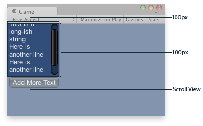

GUILayout.BeginScrollView
public static Vector2 BeginScrollView(Vector2 scrollPosition,
bool alwaysShowHorizontal,
bool alwaysShowVertical,
params GUILayoutOption[] options);
public static Vector2 BeginScrollView(Vector2 scrollPosition,
GUIStyle horizontalScrollbar,
GUIStyle verticalScrollbar,
params GUILayoutOption[] options);
public static Vector2 BeginScrollView(Vector2 scrollPosition,
GUIStyle style,
params GUILayoutOption[] options);
Parameters
| scrollPosition | The position to use display. | |
| alwayShowHorizontal | Optional parameter to always show the horizontal scrollbar. If false or left out, it is only shown when the content inside the ScrollView is wider than the scrollview itself. | |
| alwayShowVertical | Optional parameter to always show the vertical scrollbar. If false or left out, it is only shown when content inside the ScrollView is taller than the scrollview itself. | |
| horizontalScrollbar | Optional GUIStyle to use for the horizontal scrollbar. If left out, the horizontalScrollbar style from the current GUISkin is used. | |
| verticalScrollbar | Optional GUIStyle to use for the vertical scrollbar. If left out, the verticalScrollbar style from the current GUISkin is used. |
Returns
Vector2 The modified scrollPosition. Feed this back into the variable you pass in, as shown in the example.
Description 描述
Begin an automatically laid out scrollview.
Automatically laid out scrollviews will take whatever content you have inside them and display normally. If it doesn't fit, scrollbars will appear. A call to BeginScrollView must always be matched with a call to EndScrollView.

Scroll View in the Game View..
using UnityEngine;
public class ExampleScript : MonoBehaviour { // The variable to control where the scrollview 'looks' into its child elements. Vector2 scrollPosition;
// The string to display inside the scrollview. 2 buttons below add & clear this string. string longString = "This is a long-ish string";
void OnGUI() { // Begin a scroll view. All rects are calculated automatically - // it will use up any available screen space and make sure contents flow correctly. // This is kept small with the last two parameters to force scrollbars to appear. scrollPosition = GUILayout.BeginScrollView( scrollPosition, GUILayout.Width(100), GUILayout.Height(100));
// We just add a single label to go inside the scroll view. Note how the // scrollbars will work correctly with wordwrap. GUILayout.Label(longString);
// Add a button to clear the string. This is inside the scroll area, so it // will be scrolled as well. Note how the button becomes narrower to make room // for the vertical scrollbar if (GUILayout.Button("Clear")) longString = "";
// End the scrollview we began above. GUILayout.EndScrollView();
// Now we add a button outside the scrollview - this will be shown below // the scrolling area. if (GUILayout.Button("Add More Text")) longString += "\nHere is another line"; } }